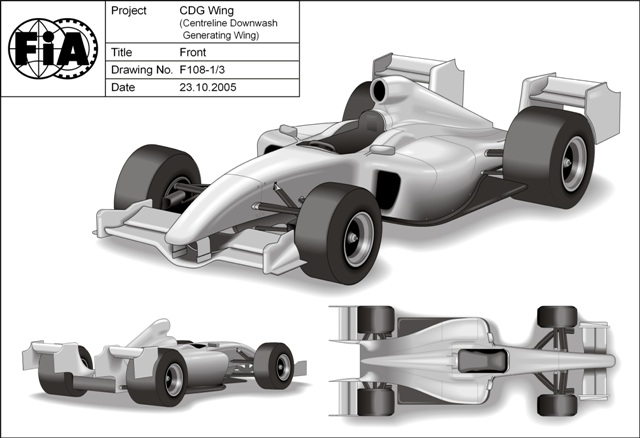

Formula 1 Diffuser Controversy
The ongoing Formula 1 (F1) diffuser controversy has raised the awareness in the general public (especially in F1-mad countries, such as the UK) of a key aerodynamic device used in many forms of motor racing. And if one diffuser is good then two must be better, right? So goes the latest thinking in F1.
Brawn Double Deck Diffuser
A diffuser is a specially shaped aerodynamic device attached to the rear of many racecars. A moving car causes a low pressure region to develop just ahead of the diffuser. This decrease in pressure (relative to the higher pressure on top of the car) causes an increase in downforce, which allows a car to corner faster. The diffuser actually decelerates the airflow after the air reaches its maximum speed (which according to Bernoulli's principle equates to its minimum pressure), and attempts to return the air to its pre-accelerated condition in order to minimize drag.
Centreline Downwash Generating (CDG) Wing
This latest F1 controversy (and over the years there have been many) can be traced back to a controversial Computational Fluid Dynamics (CFD) analysis performed on a so-called Centreline Downwash Generating (CDG) [rear] Wing design commissioned by the F1 governing body FIA in 2005. The CDG Wing was supposed to address the lack of overtaking (contributing to boring races) in F1 by inducing a downwash behind an F1 car. It was thought that a second F1 car could then follow more closely and benefit from drafting used to good effect in passing maneuvers in NASCAR. After the CDG Wing CFD analysis was discredited by the F1 teams, they formed the Overtaking Working Group (OWG) in 2006 and tasked it with making suggestions to improve the ability of F1 cars to pass each other. This could be interpreted as putting the fox in charge of the henhouse.
The OWG was headed by Rory Byrne (Ferrari), Pat Symonds (Renault) and Paddy Lowe (McLaren). They proposed a set of aerodynamic regulation changes, plus the re-introduction of slick tires, that aimed to reduce downforce levels by 50%. In theory, with these new regulations, if a following car was 1 second a lap faster than the car in front, it should be able to pass relatively easily. The proposals were approved in 2007 for introduction in 2009. Within these new regulations was an innocuous set of limits on the rear diffuser - or so the writers thought.
The Honda Racing F1 team signed the legendary Ferrari technical director Ross Brawn as team principal in late 2007 and they were optimistic for the 2008 season. However, their car (pre-Brawn influence) was terrible, so bad that they stopped developing it mid-season to focus instead on the new 2009 car. No one in F1 has ever been accused of following the spirit of the F1 rules - all that matters is the letter of the rules - especially when salaries are linked to F1 championship points. Brawn's team started developing the new 2009 car in that 'spirit.' This decision would prove decisive in producing what would become the class car of the field in the early 2009 season. But first, in an attempt to 'snatch defeat from the jaws of victory,' - Honda pulled out of F1 in late 2008 and after putting the team up for sale, struggled to find a buyer.
After much speculation on the fate of the Honda F1 team, Brawn was gifted a management buyout deal by Honda and an engine deal by Mercedes-Benz. The newly named Brawn GP team barely had time to launch and officially test their new car before the first race of the season in Australia. It was immediately obvious that the new Brawn GP01 car was special and it led all comers in its brief pre-season testing. Also obvious was that 3 teams had taken the letter of the new F1 2009 rules to heart and produced rear diffusers markedly different from the other teams. The teams represented in the OWG all played by the spirit of the new rules and, come Australia the first race of the 2009 season, regretted it. The three teams with what became known as the Double Decker Diffuser (DDD) - WilliamsF1, Toyota Racing and Brawn GP. The most effective design was Brawn GP's, securing 3 wins for Jenson Button out of 4 starts in 2009 so far. It's interesting to note that the DDD three had no direct ties to members of the OWG prior to the 2009 season, whereas all the other F1 teams either had direct representation or shared engine deals with those that did.
The DDD is essentially two diffusers stacked on top of each other. It's not the most efficient diffuser design, but it is if you are following the letter of the new F1 2009 rules. There's talk that this new design contributes an additional 30-40% more downforce than a single diffuser. It's also interesting to note that the 2009 cars are faster than the 2008 cars - so it's doubtful that the target of a 50% reduction in downforce, cited by the OWG, was realized.
It appears that the OWG made their proposed rule changes in good faith and their respective teams actually played by the spirit of the new 2009 rules much to their detriment. Protests against the DDD were not upheld and racing being racing, all teams are now in a mad rush to copy the secret sauce (DDD) that Brawn GP discovered while in the depths of despair during the 2008 season.
Feedback
Questions? Ideas? Problems?

Recent blog posts
- CFD Simulates Distant Past
- Background on the Caedium v6.0 Release
- Long-Necked Dinosaurs Succumb To CFD
- CFD Provides Insight Into Mystery Fossils
- Wind Turbine Design According to Insects
- Runners Discover Drafting
- Wind Tunnel and CFD Reveal Best Cycling Tuck
- Active Aerodynamics on the Lamborghini Huracán Performante
- Fluidic Logic
- Stonehenge Vortex Revealed as April Fools' Day Distortion Field
 Get our Blog feed
Get our Blog feed